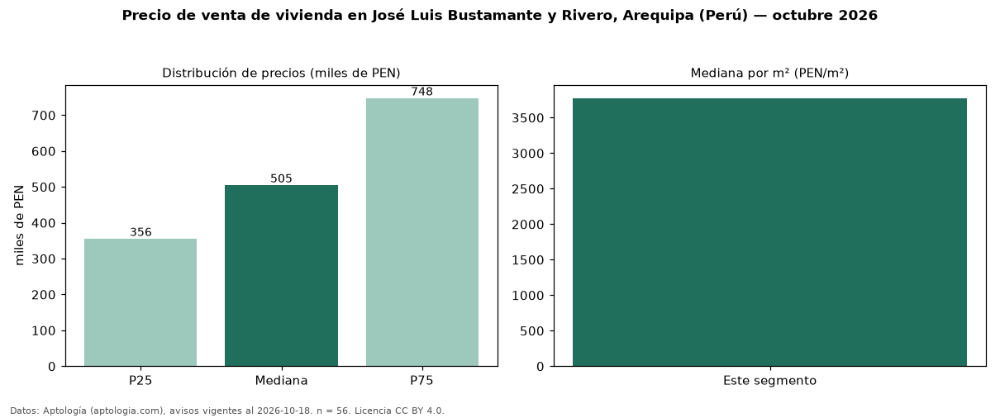

Precio de venta de vivienda en José Luis Bustamante y Rivero, Arequipa (Perú) — octubre 2026
En José Luis Bustamante y Rivero, Arequipa (Perú), la mediana de precio de venta de vivienda es PEN 504.950, según 56 avisos vigentes. Por metro cuadrado, la mediana es PEN 3.775/m² (n = 48 avisos con área). Por tipo: 66 % departamentos, 34 % casas. El área mediana anunciada es 143 m². El segmento con más oferta es el de 3 o más habitaciones (43 avisos, mediana PEN 518.000). La mitad central de los avisos va de PEN 355.500 a PEN 747.500 (razón 2,1), una dispersión alta. Datos: Aptología (aptologia.com), CC BY 4.0 — https://www.aptologia.com/pe/venta/arequipa/jose-luis-bustamante-y-rivero. Archivos: PDF, CSV con las cifras y gráfica PNG.

| Avisos únicos | 56 |
|---|---|
| Percentil 25 | COP 355.500 |
| Mediana | COP 504.950 |
| Percentil 75 | COP 747.500 |
| Mediana por m² | COP 3.775 |
Fuente: avisos vigentes de portales inmobiliarios recopilados por Aptología, deduplicados (mínimo 30 avisos únicos por celda). Precios pedidos, no cerrados. Fecha: 2026-10-18.